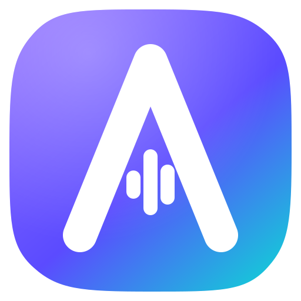

altercastAltercast listens to the commentary, works out who is speaking and how excited they are, then speaks each line again in the character voice you pick — on time with the picture, with the crowd kept.
The match and its commentary in this demo are made by us (animated pitch, generated voices) — no broadcast footage. The engine processed the clip once, at live speed, exactly as it does a stream; this page replays that result so it never waits for a server. Viewers watch a few seconds behind live, so the new voice lands with the picture. The same engine runs live in the Altercast web app and Chrome extension.